Center for Geospatial Analytics at North Carolina State University
Corey White adpted from Justyna Jeziorska
Objectives
Understand the role of the Federal Aviation Administration (FAA) in ensuring safety in the National Airspace System (NAS)
Recognize the main types of UAS operations and distinguish between them
Name the requirements for legal commercial UAS operations in the U.S., both for the pilot and for the UAS
Outline the requirements for recreational flying under the 49 USC 44809 exception, including TRUST
Objectives
Know the operating rules for commercial use of UAS (Part 107)
Understand how airspace authorization works today (LAANC) and recognize permanent and temporary “no-drone-zones”
Understand the role of the Certificate of Authorization (COA) for public agencies
Recognize when educational use of UAS falls under the recreational exception and when it requires Part 107
Federal Aviation Administration (FAA)
Created in 1958 in response to a series of fatal accidents and midair collisions involving commercial aircraft
Mandated to develop plans and policies for the use of navigable airspace to ensure the safety of aircraft and the efficient use of airspace
Since the creation of the FAA, American airspace has become one of the most regulated fields in the United States
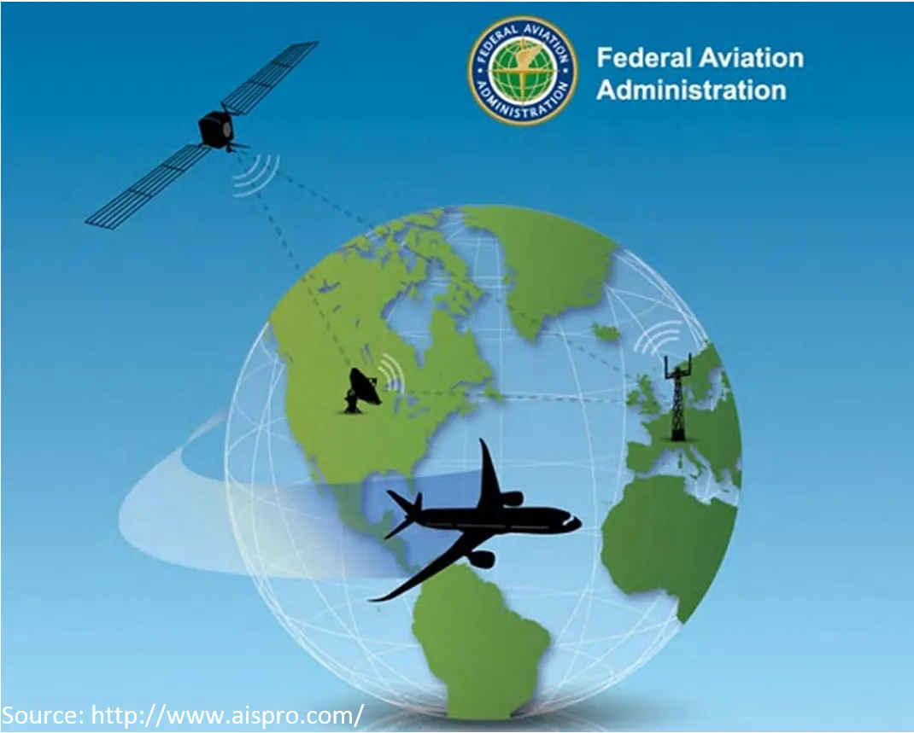
National Airspace System (NAS)
Already congested with piloted aircraft, and adding a swarm of UAS requires thoughtful planning
Main mandate: to ensure that UAS do not endanger current users of the NAS nor compromise the safety of people and property on the ground
Types of UAS operations
Commercial / civil: any flight in furtherance of a business or non-recreational purpose, under 14 CFR Part 107
Recreational: strictly for personal enjoyment, under the 49 USC 44809 exception
Public aircraft operations: government entities, under Part 107 or a Certificate of Authorization (COA)
Educational use can fall under the recreational exception or Part 107, depending on the activity
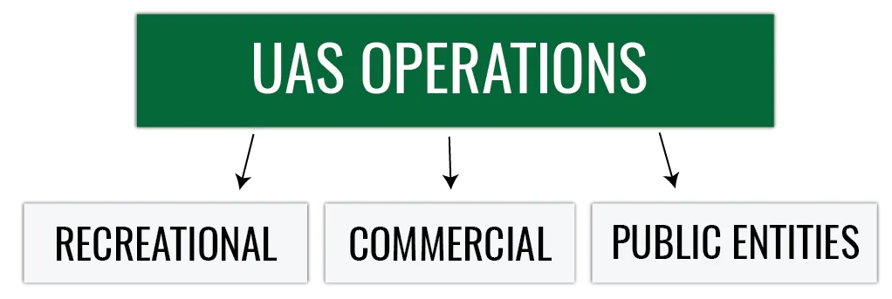
Recreational use of UAS
Operation of an unmanned aircraft strictly for personal interests and enjoyment
Taking photographs for your own personal use is recreational
Taking the same photographs for compensation, for sale, or in furtherance of any business (including research or coursework deliverables for pay) is a commercial operation under Part 107
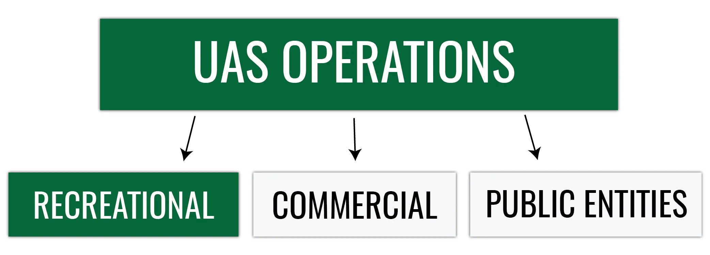
Recreational use - the 44809 exception
To fly recreationally without a Part 107 certificate you must follow all conditions of 49 USC 44809:
Fly strictly for recreational purposes
Pass TRUST (The Recreational UAS Safety Test) and carry proof of completion
Register the aircraft if it weighs 250 g or more (FAADroneZone) and comply with Remote ID
Follow the safety guidelines of an FAA-recognized Community Based Organization (CBO)
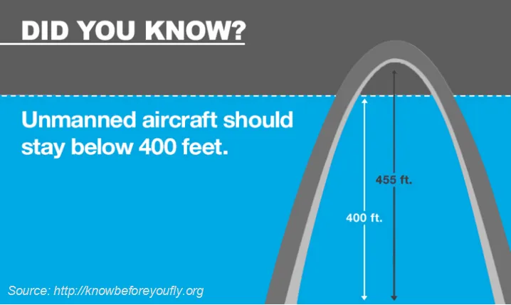
Recreational use - the 44809 exception
Keep the aircraft within visual line of sight (or use a co-located visual observer)
Give way to and never interfere with manned aircraft
Fly at or below 400 ft in uncontrolled (Class G) airspace
In controlled airspace (Class B, C, D, E surface areas): fly only with a LAANC authorization or FAA authorization, at or below the UAS Facility Map altitude
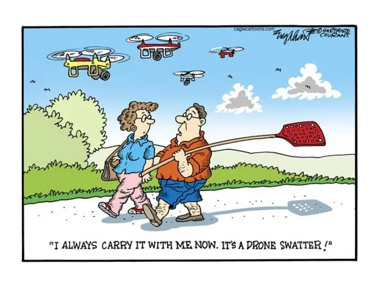
Recreational use - safety practices
Ensure the operating environment is safe and the operator is competent and proficient
Do not fly over people or moving vehicles, and keep a safe distance from individuals and vulnerable property
Do not fly near or over sensitive infrastructure (power stations, water treatment facilities, correctional facilities, heavily traveled roadways, government facilities)
Do not fly in adverse weather such as high winds or reduced visibility
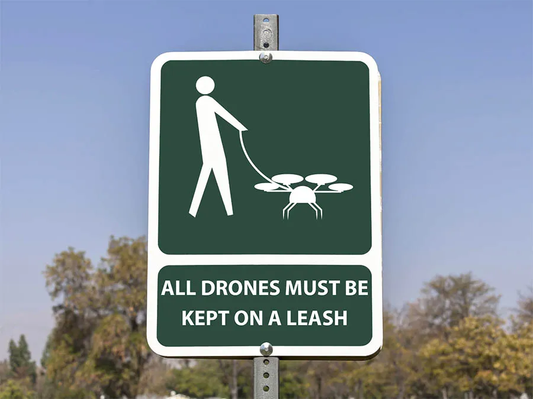
Recreational use - safety practices
Check and follow all local laws and ordinances before flying over private property
Do not conduct surveillance or photograph persons where there is an expectation of privacy without permission
Do not fly under the influence of alcohol or drugs
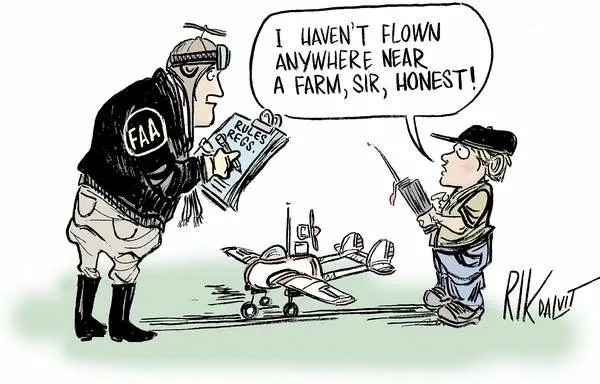
Commercial use of UAS
Any use in connection with a business or work, including:
Selling photos or videos taken from a UAS
Providing contract services, such as industrial equipment or factory inspection
Providing professional services, such as security or telecommunications
Monitoring the progress of work your company is performing
University research and mapping projects like the ones in this course
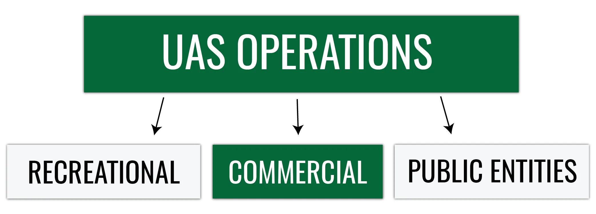
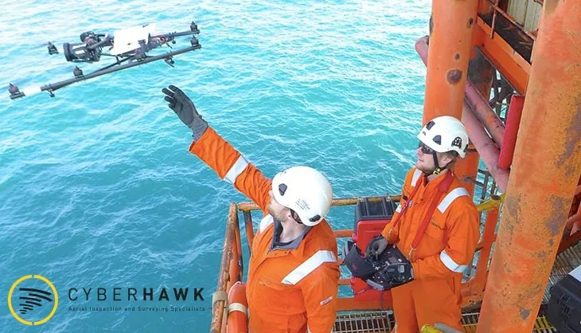
Commercial use - Remote Pilot requirements
Must be at least 16 years of age
Be able to read, speak, write, and understand English
Be in a physical and mental condition to safely fly a drone
Must be easily accessible by the remote pilot during all UAS operations
Certificate holders must complete free online recurrent training every 24 calendar months to maintain aeronautical knowledge recency (effective April 2021)
Must fly at or below 400 feet above ground level (AGL), or within 400 feet of a structure if flying higher
Must not fly from a moving vehicle unless in a sparsely populated area
Must fly at or below 100 mph (87 knots)
Must yield right of way to manned aircraft
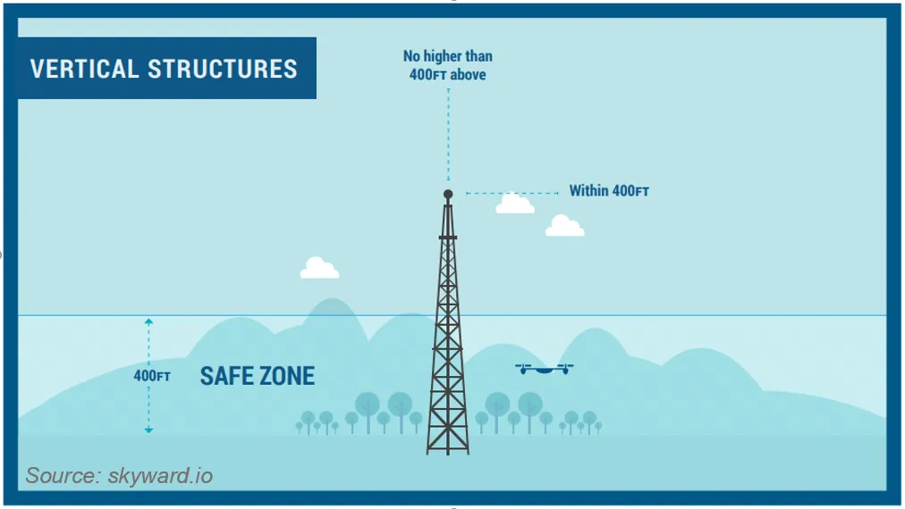
Commercial use - operating rules
Must keep the UAS within visual line of sight (VLOS) of the remote pilot in command or a visual observer
Night operations allowed without a waiver (since April 2021) if the pilot has completed current training and the aircraft has anti-collision lighting visible for 3 statute miles
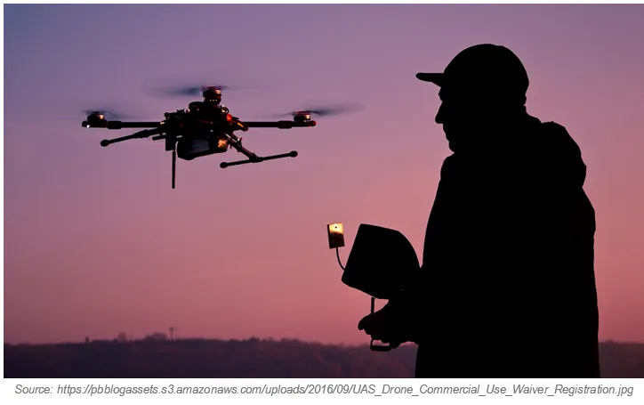
Remote ID
UAS must broadcast identification, location, and control-station location during flight (rule effective 2021, enforced since March 16, 2024)
Three ways to comply:
Standard Remote ID aircraft (built-in broadcast)
Aircraft with an attached broadcast module (VLOS only)
Fly without Remote ID only inside an FAA-Recognized Identification Area (FRIA)
Applies to all aircraft that must be registered (recreational and Part 107)
Operations Over People - Categories 1-4
Since April 2021, routine flight over people is allowed under Part 107 if the aircraft qualifies for one of four categories (14 CFR Part 107 Subpart D).
Not to be confused with airspace classes B/C/D/E/G from earlier in this lecture
Category is a property of the aircraft (weight, injury severity, certification), not of the pilot
Sustained flight over open-air assemblies additionally requires Remote ID (Categories 1-3)
Category 1
Eligibility: aircraft weighs 0.55 lb (250 g) or less, including everything attached.
Requirements:
No exposed rotating parts that could lacerate human skin
Remote ID required for sustained flight over open-air assemblies
Operations:
May fly over people without a waiver or a Declaration of Compliance
Example UAS: sub-250 g aircraft such as the DJI Mini series or DJI Neo (with propeller guards where needed to meet the laceration requirement)
Category 2 and Category 3
Eligibility: no weight limit; injury-severity based, demonstrated through an FAA-accepted Means of Compliance and a Declaration of Compliance by the manufacturer.
Category 2: impact must not exceed the severity of 11 ft-lbs of kinetic energy; no exposed lacerating parts; allows routine flight over people
Category 3: impact must not exceed 25 ft-lbs; no flight over open-air assemblies; over people only within a closed or restricted-access site with notice, or when people are under cover or in stationary vehicles
Category 4
Eligibility: aircraft holds an airworthiness certificate issued under Part 21, like a crewed aircraft.
Requirements:
Operated within its approved flight manual limitations
Maintenance, inspection, and record-keeping program required
Operations:
May operate over people, including sustained flight over open-air assemblies, subject to the operating limitations in the certificate
Waivers from Part 107 operating rules
To operate outside Part 107 rules, apply for a Certificate of Waiver through FAADroneZone
The FAA grants waivers when the proposed operation can be performed safely with the applicant’s proposed mitigations
Waivable sections of Part 107
Operation from a moving vehicle or aircraft (§ 107.25)
Visual line of sight aircraft operation (§ 107.31) - the most requested waiver today (BVLOS)
Visual observer (§ 107.33)
Operation of multiple small unmanned aircraft systems (§ 107.35)
Yielding the right of way (§ 107.37(a))
Operation over people (§ 107.39, beyond the category rules)
Operation in certain airspace (§ 107.41)
Operating limitations for small unmanned aircraft (§ 107.51)
No waiver will be issued to allow the carriage of property of another by aircraft for compensation or hire
Accident reporting (§ 107.9)
No later than 10 days after an operation, the remote pilot in command must report to the FAA any operation of the small unmanned aircraft involving at least:
Serious injury to any person or any loss of consciousness; or
Damage to any property, other than the small unmanned aircraft, unless the cost of repair (including materials and labor) or fair market value of the property does not exceed $500
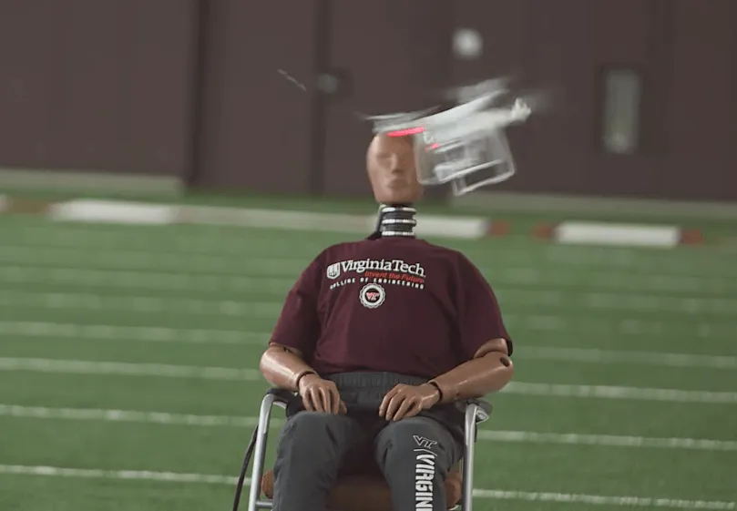
Where NOT to fly
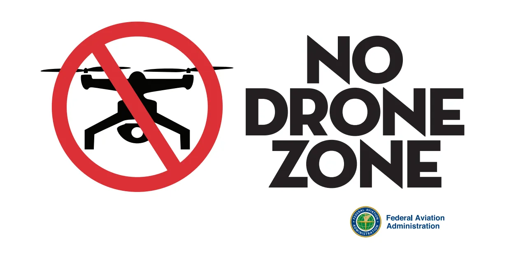
Airspace restrictions
Security Sensitive Airspace Restrictions
Temporary Flight Restrictions (TFRs)
Restricted or Special Use Airspace
Stadiums and sporting events
Wildfires
Controlled airspace around airports (LAANC)
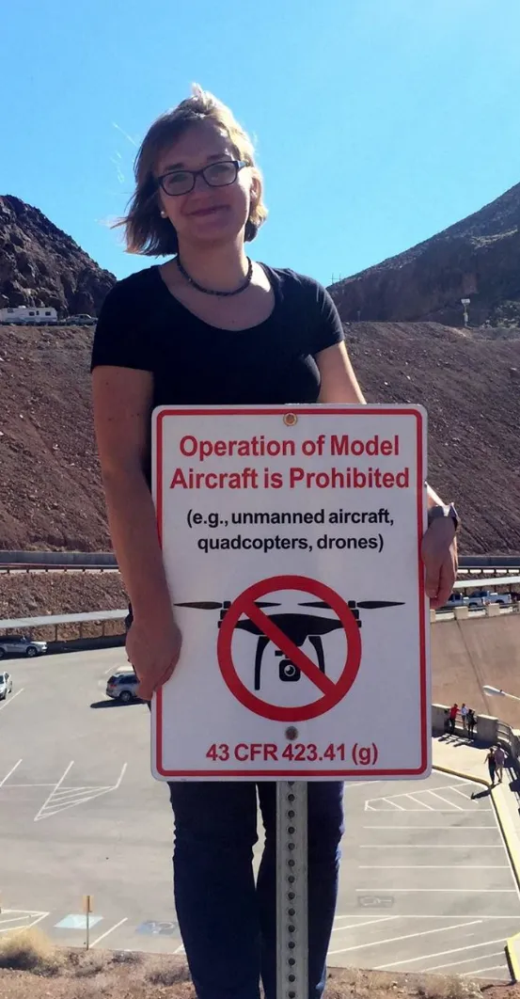
Security Sensitive Airspace Restrictions
All UAS flights prohibited within the airspace
Restrictions extend from the ground up to 400 feet AGL
Apply to all types and purposes of UAS flight operations
Remain in effect 24 hours a day, 7 days a week
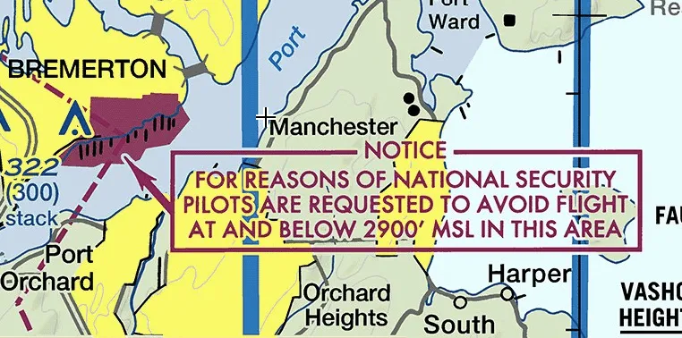
14 CFR § 99.7
Temporary Flight Restrictions
TFR: airspace where flight is limited because of a temporary hazardous condition (wildfire, chemical spill) or a security-related event (VIP movement, large public events)
The TFR text gives the details: size, altitude, effective times, and which operations are restricted or permitted
Under 49 USC 44809(c) and FAA educational-user guidance, students at accredited institutions may fly under the recreational exception as part of coursework (TRUST, registration, and all other 44809 conditions still apply)
Faculty-directed research and flights that further university business generally require Part 107
In this course, instructional flight operations are conducted under Part 107 by certificated pilots
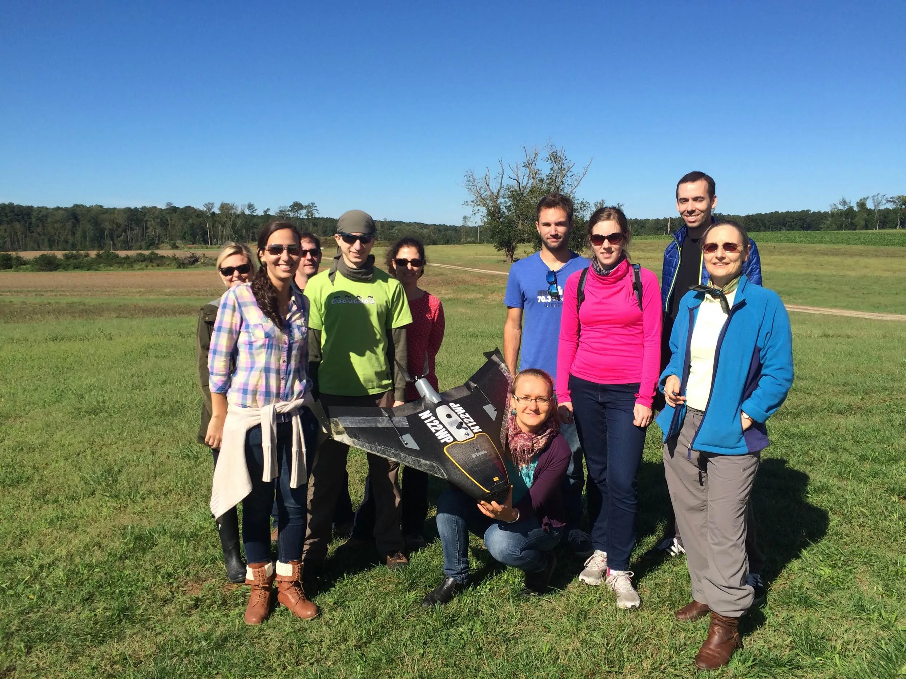
UAS best practices
If you can, tell other people you’ll be taking pictures or video of them before you do so
If someone has a reasonable expectation of privacy, don’t violate it by taking pictures or video, unless you’ve got a very good reason
Don’t fly over other people’s private property without permission if you can easily avoid doing so
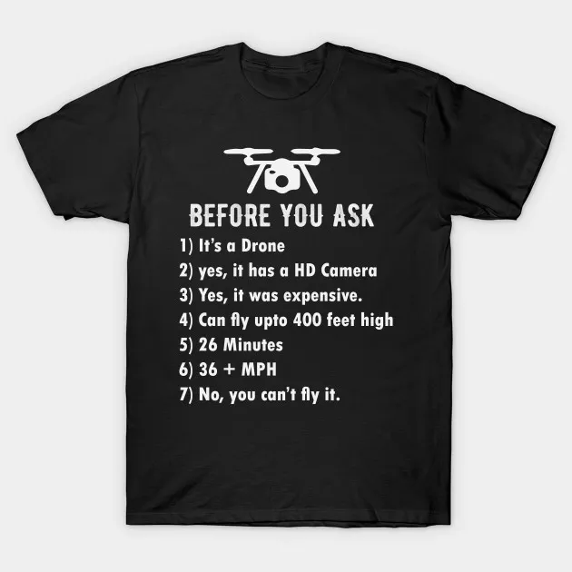
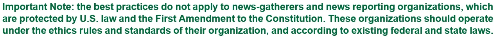
UAS best practices
Don’t gather personal data for no reason, and don’t keep it for longer than you have to
If you keep sensitive data about other people, secure it against loss or theft
If someone asks you to delete personal data about him or her that you’ve gathered, do so, unless you’ve got a good reason not to
Don’t harass people with your drone
Current developments - BVLOS and Part 108
The biggest open problem from earlier in this lecture: beyond visual line of sight (BVLOS) flight without a waiver
The FAA published the proposed Part 108 rule (Notice of Proposed Rulemaking, August 2025) to enable routine BVLOS operations
Built on automated traffic awareness/deconfliction services and aircraft airworthiness acceptance instead of one-off waivers
Expect the regulatory landscape to keep shifting; always check faa.gov/uas for current rules